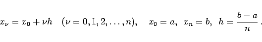
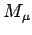
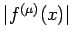

Die folgenden Formeln stellen sogenannte Interpolationsquadraturen dar. Dabei wird der Integrand f(x) bezüglich einiger (möglichst weniger) Stützstellen durch ein Polynom p(x) entsprechenden Grades interpoliert, und das Integral über f(x) wird durch das über p(x) ersetzt. Die Formel für das Integral über das gesamte Integrationsintervall ergibt sich dann durch Summation. Im folgenden werden nur die praktisch wichtigsten Formeln für den Fall angegeben, daß die Stützstellen gleichabständig sind:
|  | (19.72) |
Zu jeder Quadraturformel wird eine obere Schranke für den Fehlerbetrag |R| angegeben. Dabei bedeutet  eine für den gesamten Bereich der Stützstellen gültige obere Schranke für .